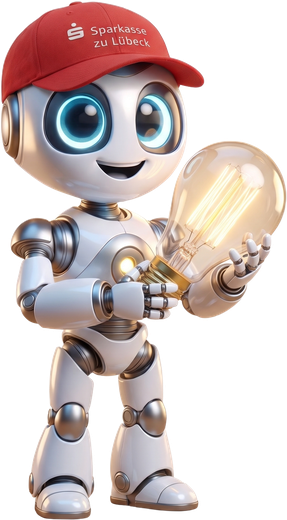
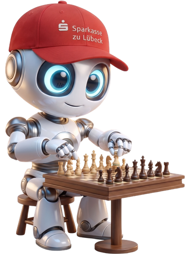
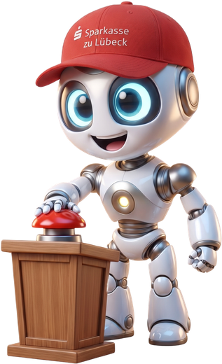
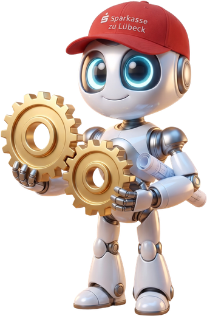
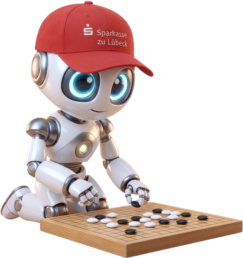
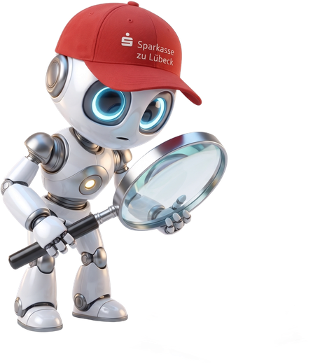

Sparkasse zu Lübeck · 10. September 2026 · online
KI-Kompakt.
Der S-KIPilot im Arbeitsalltag.

Sparkasse zu Lübeck · 10. September 2026 · online
Der S-KIPilot im Arbeitsalltag.

KI aus Lübeck.
Für Deutschland.


Wer hat den S-KIPilot
schon mal geöffnet?
Handzeichen reicht. Slido geht auch.








Sie nimmt euch das Tippen ab.
Nicht das Entscheiden, nicht den Kunden.
Wer eine Mail schreiben kann, kann das.
Es ist ein Gespräch, kein Programmieren.
Der S-KIPilot läuft in der FI-Umgebung.
Draußen gilt: nur Öffentliches.
Der S-KIPilot liest euer ICM.
„Lampe kaputt, was tun?“
Mails entwerfen, Notizen bündeln, Formulierungen glätten.
Dokumente analysieren, Sachverhalte aufbereiten, Reports vorbereiten.
Wo seht ihr das größte Potenzial in eurem Alltag?

Heute
Fragen stellen, zusammenfassen, suchen.
Morgen
Jedes Update bringt mehr, ohne dass ihr etwas tun müsst.
Übermorgen
KI steckt in euren Prozessen und meldet sich, bevor ihr fragt.

Ihr bekommt irgendwas.

Genau das, was ihr wollt.

15:15 bis 15:45
Zurück um 15:45

kahoot.it
Handy raus. Der Code kommt gleich in den Chat.

Schnell, klar, Zeit gespart
Wenig Kontext, Nachfragen nötig

Präzise, tief, viel Kontext
Lange Prompts, hoher Aufwand

Frischer Blick, neue Ansätze
Schwer steuerbar, Prüfung nötig

Klare Gliederung, sofort nutzbar
Starre Form, wenig Spielraum

Ein Wort in Slido.
Wir schauen gemeinsam zu.
Anonym. Und ehrlich, sonst bringt es nichts.
EDGE Digital
Fischstraße 16 · 23552 Lübeck
Künstliche Intelligenz. Echte Wirkung.